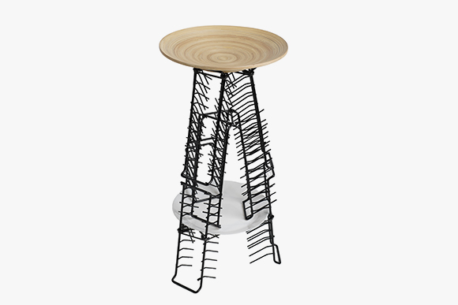
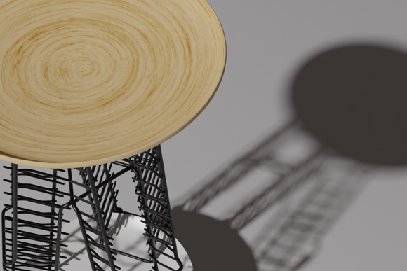

POPKEA: FELIX


我认为“黑客精神”是不受限于传统思维，换一种新的角度去看待事物和问题，挑战新奇的解决方式。在FELIX凳子的设计制作上，我保留了盘子和盘子架的使用方式，仅仅只是换了一个看待的角度，便能够融合成为这把凳子。也许换一个视角，生活日常之物有了不同的联系，就诞生了小小的惊奇感！
I think the "hacker spirit" is not limited to traditional thinking, considering things and problems from a new perspective, and challenging novel solutions. To design the stool, I kept the way of using the plate and the plate rack, and just changed the angle of our view, and it can be integrated into this stool. Maybe from another perspective, life is full of small surprises!